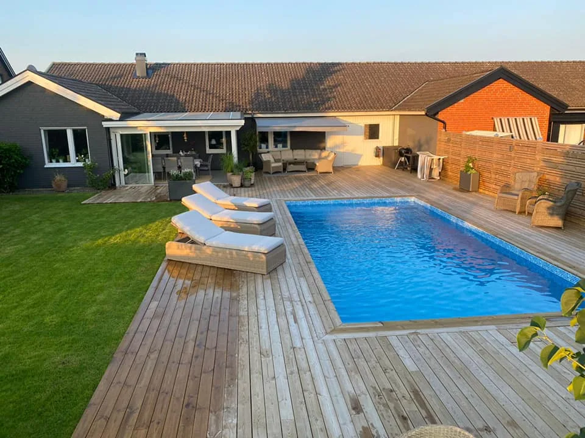
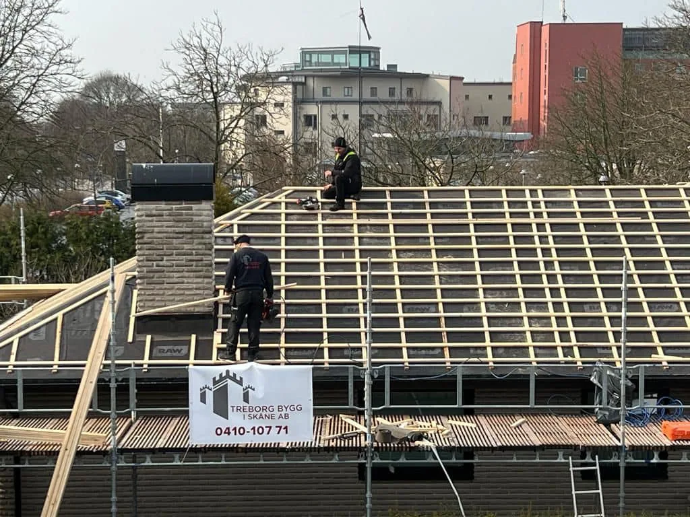
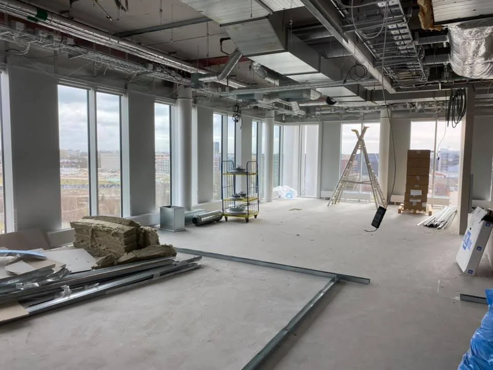
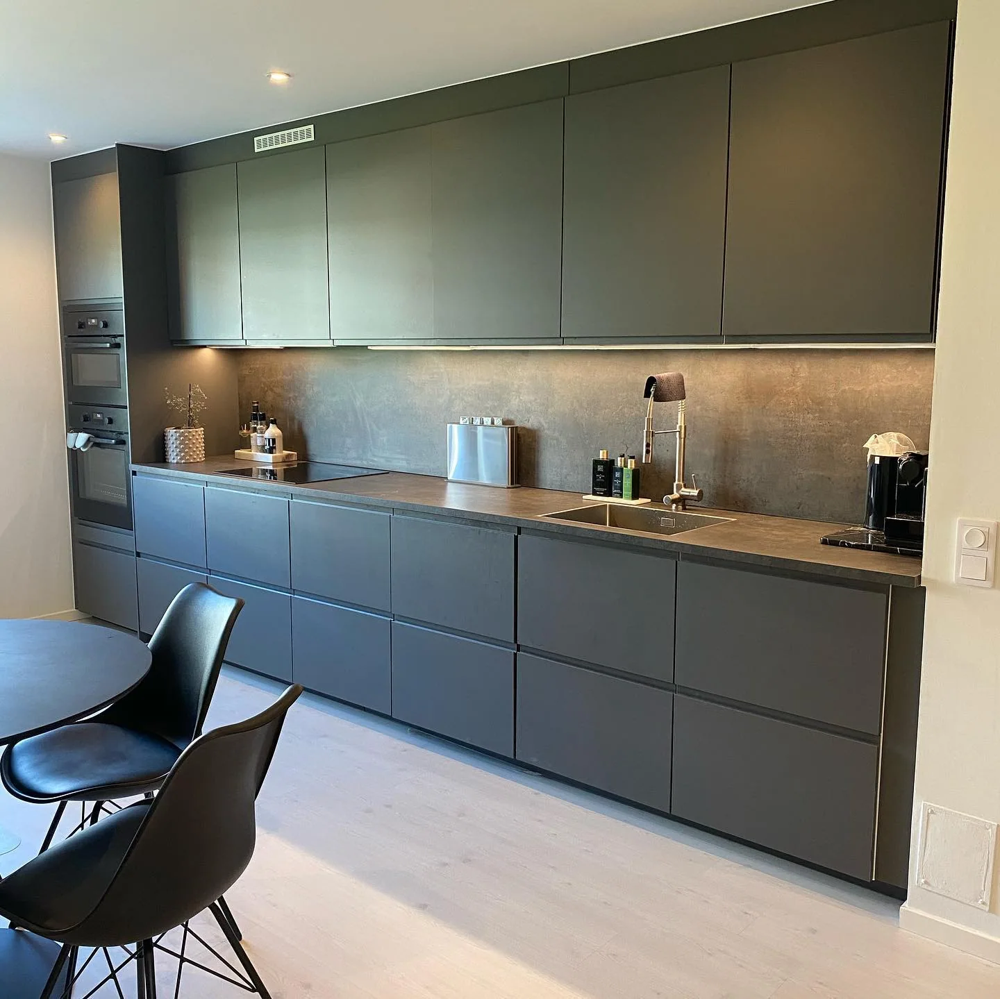
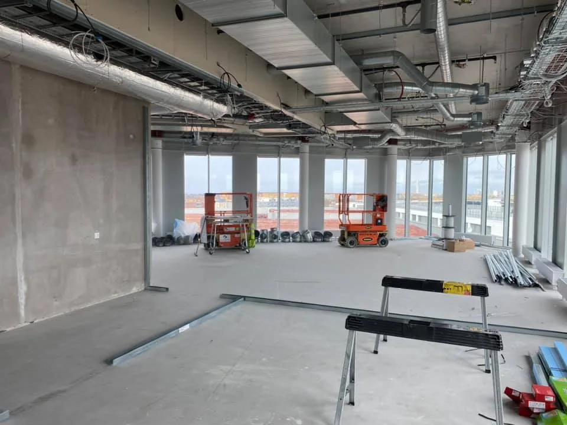
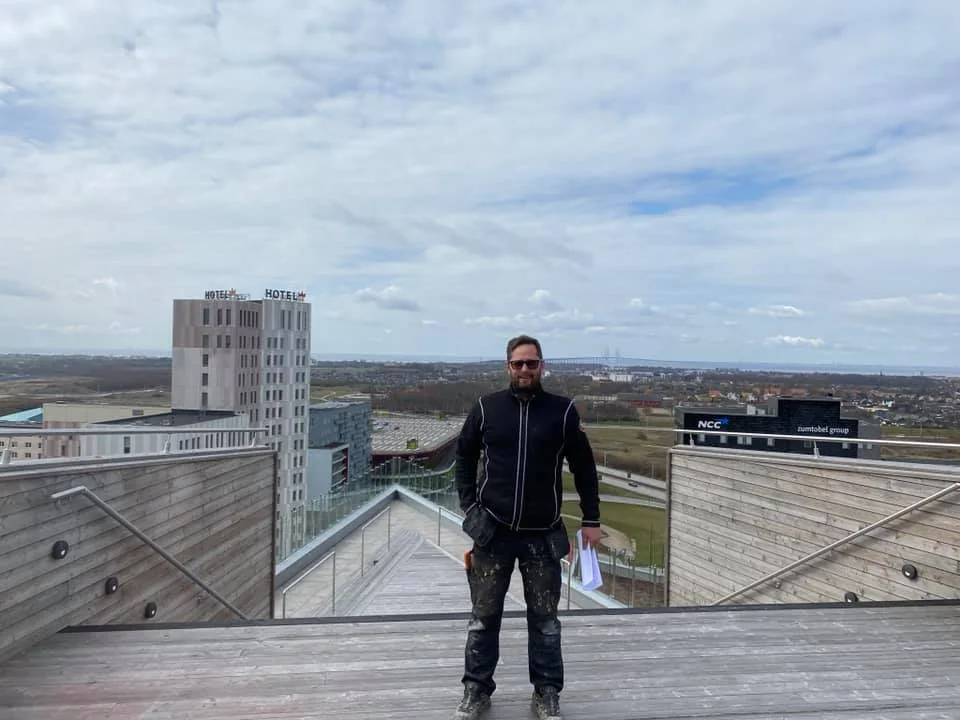
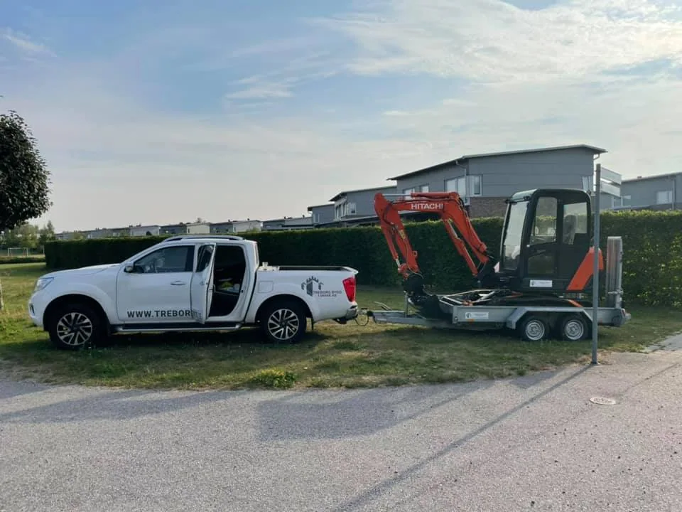
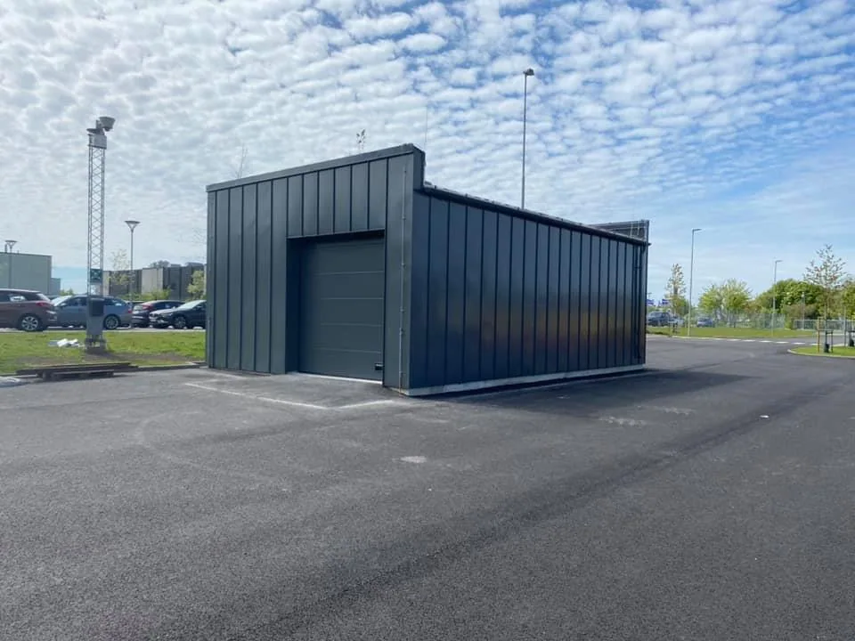
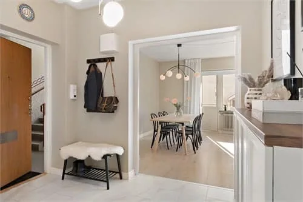

Arbetet talar
för sig självt.
Ett urval från våra uppdrag. Välj en kategori och öppna bilderna för att se hela motivet.
Visar 11 bilder


Pool och trädäck
Poolbygge


Takbyte
Takläggning


The Edge, Hyllie
Kontorsbygge på uppdrag av Peab

Pool och stenläggning
Poolbygge


Köksrenovering
Renovering

Kök under arbete
Renovering


Arbete i The Edge
Kontorsbygge på uppdrag av Peab


På plats i Hyllie
The Edge


Tillbyggnad och poolbygge
Pågående arbete


Uppdrag för Peab
Referens från vårt galleri


Invändig renovering
Från vårt referensgalleri
Kundernas rekommendationer
100%
rekommenderar oss på Facebook
Baserat på 7 recensioner.
Kontrollerat 19 november 2026.
”Blev mycket nöjd och det bästa var att dom blev klara i tid”
Haidar Ali Rekommendation på Facebook, 23 oktober 2019. Utdrag.